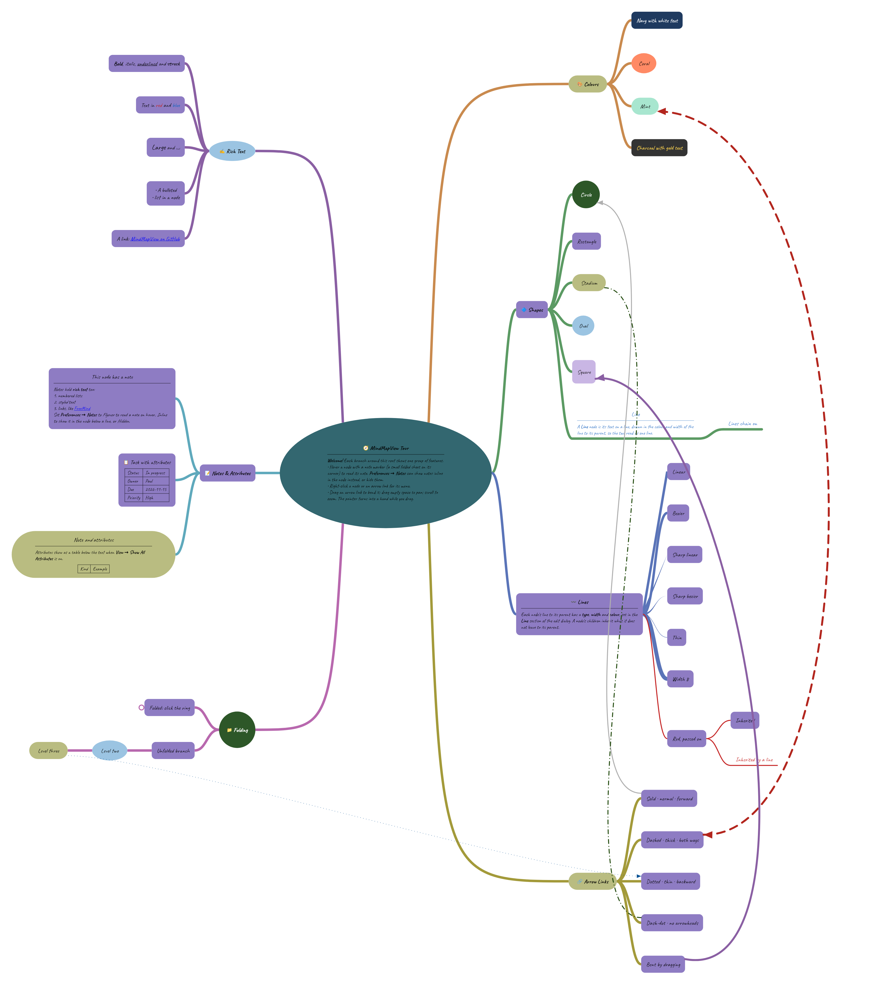

User Manual

Version 1.1.0 · for the desktop app and the web app
MindMapView is a mind map editor. A mind map starts from one central idea, the root, with related ideas branching out from it. Each idea is a node: a shape with text in it. You can give a node a note, attributes, links and an emoji, color it, fold its branch away, and draw arrows between any two nodes.
MindMapView runs in two ways that work the same:
Maps are saved in MindMapView's own .mmv format, which keeps everything about a map. MindMapView also opens and exports FreeMind (.mm) maps.
The window has three parts:
A new map has only its root node, in the middle. The window's title shows the name of the file, and starts with an asterisk (*) while the map has changes that are not saved.
A new node is always added as a child of the selected node. There are three ways to add one:
Each way opens the Add node dialog, where you give the node its text and style. A new node starts with the text node_1, node_2 and so on. It takes the shape and colors of the last child of the node it is added to, so siblings look alike. The first child of a node gets the shape set in Preferences (section 15).
Click Save & Close to add the node, or Add Another to add it and open the dialog again for the next child of the same node, so you can add several in a row.
A Line node has no box: its text sits on a line, which carries on from the line to its parent in the same color and width. The lines to its children leave from the other end.
Double-click a node, choose , or right-click the node and choose . The Edit node dialog has these parts, from top to bottom:
| Part | What it does |
|---|---|
| Shape | The node's shape, chosen from a drop-down list. The root is always an oval. |
| Emoji | An emoji shown in front of the node's text (section 6). |
| Text | The node's text, with a toolbar for bold, italic, lists, links and size. |
| Fill | The node's background color. |
| Text | The color of the node's text. |
| Line | The Type (Linear, Bezier, Sharp linear or Sharp bezier), Width and Color of the line from the node's parent. Each can be left as Inherited, to take it from the parent; the node's children inherit it in turn. Click Line to open and close the section. |
| Note | A longer note (section 7). Click Note to open and close the section. |
Press Enter or click Save & Close to keep your changes, or click Cancel to drop them. To put a line break in the node's text, press Alt+Enter. In the note, Enter starts a new line. The dialog can be resized; the note gets the extra room.
If you change the shape while the colors are still that shape's own, they change with it to the new shape's colors. Colors you chose yourself are kept.
Select the node and choose , or right-click it and choose . The nodes below it are removed too. MindMapView asks you to confirm first, unless you turned that off in Preferences. The root cannot be removed.
Ctrl+Z undoes the last change and Ctrl+Y (or Ctrl+Shift+Z) redoes it. Adding, editing, removing, moving, pasting, folding and arrow links can all be undone. Selecting nodes, zooming and moving the view are not changes, so they are not undone.
| Action | Result |
|---|---|
| Click a node | Selects that node alone. |
| Shift + click | Selects the range of nodes from the selected node to the one clicked. |
| Ctrl + click | Adds the node to the selection and centers it, or takes it out of the selection. |
| Ctrl+A | Selects every node that is shown, apart from the root. |
| Esc | Clears the selection. |
With several nodes selected, you can cut, copy or remove them together.
| Keys | Selects |
|---|---|
| Ctrl+Left | The parent of the selected node, towards the root. |
| Ctrl+Right | The first child of the selected node. |
| Ctrl+Down | The next child of the same parent. |
| Ctrl+Up | The previous child of the same parent. |
The root's children can sit on six sides, evenly spaced around it: left, right, upper left, upper right, lower left and lower right. Each side has its own + button on the root. The nodes below a child of the root grow outwards to the left or right.
Each branch from the root is drawn in its own color, which the lines and + buttons further down that branch share.
The node's text and its note each have a toolbar. Select some text and click a button, or click a button and then type.
| Button | Effect |
|---|---|
| B | Bold |
| I | Italic |
| U | Underline |
| Strikethrough | |
| • | Bulleted list |
| 1. | Numbered list |
| 🔗 | Add, change or remove a web link (section 8) |
| Size ▾ | Small, Normal or Large text |
All nodes use the same font, which you choose in Preferences: Default, Inter, Lora, Nunito, Caveat or JetBrains Mono.
Click Emoji at the top of the edit dialog to open the emoji picker. You can:
The chosen emoji is shown in front of the node's text, at the same size as its first letters. The dialog previews it in front of the text as you type.
A note holds more than fits in a node: details, lists, links or pictures. How notes are shown is set by Notes in Preferences (section 15):
Write the note in the Note box of the edit dialog, with the same text toolbar as the node's text.
Click MD above the note to edit it as Markdown text instead, for example **bold**,
*italic*, - list item or [text](https://example.com). Click
MD again to go back to formatted text.
A note can show a picture from the web with Markdown like .
The note's pop-up appears once its pictures have loaded.
Text in a node or a note can link to a web page or an email address. Select the text, click the 🔗 button in the toolbar, type the Address and click OK. To change or remove a link, put the cursor in it and click 🔗 again.
Only http, https and mailto addresses can be linked to. Since maps may come from other people, MindMapView never opens other kinds of links.
To open a link:
A plain click on a link only selects the node, so clicking doesn't open web pages by mistake.
Attributes are name-and-value pairs, such as Status: In progress or Due: 2026-11-15. They are drawn as a small table below the node's text.
Folding a node hides the nodes below it, so a large map is easier to read. A folded node shows a small ring where its lines would start; click the ring to unfold it. The root cannot be folded.
The folding commands are in the menu:
| Command | Keys | Effect |
|---|---|---|
| Toggle Folded | Space | Folds or unfolds the selected node. |
| Toggle Children Folded | Ctrl+Space | Folds or unfolds each child of the selected node. |
| Fold One Level | Alt+PageUp | Hides the deepest level shown below the selected node. |
| Unfold One Level | Alt+PageDown | Shows one more level below the selected node. |
| Fold All | Alt+Home | Folds everything below the selected node. |
| Unfold All | Alt+End | Unfolds everything below the selected node. |
A node with children also has or in its right-click menu. Folds are saved with the map, including in FreeMind files.
An arrow link is a curved arrow from one node to any other node, drawn on top of the map. Use it to show a connection that isn't parent and child.
Drag an arrow to bend its curve. Right-click an arrow for its menu:
| Item | Effect |
|---|---|
| Go to: ... | Selects and shows the node at either end of the arrow. |
| Arrowheads | Forward, Backward, Both Ways or No Arrowheads. |
| Line style | Solid, Dashed, Dotted or Dash-Dot. |
| Thickness | Thin, Normal or Thick. |
| Color | The arrow's color. |
| Reset Curve | Undoes any bending, back to the arrow's own curve. |
| Remove Arrow Link | Removes the arrow. |
These are also in the menu and a node's right-click menu. Pasting within MindMapView keeps everything about the nodes: shapes, colors, notes, attributes and folds.
Copied nodes also go on the clipboard as an indented outline of plain text, one line per node. You can paste that into a text editor, email or document.
Going the other way, you can paste text copied from another program. Each line that isn't blank becomes a node. A line indented more than the line above it becomes that line's child. Bullets such as -, * or • at the start of a line are left out. For example:
Holiday
Travel
Book flights
Rent a car
Packing
The new nodes look like the last child of the node you paste into.
Press Ctrl+F or choose to open the find bar, then type. MindMapView selects the first node whose text or note contains what you typed, ignoring capital letters. The bar shows which match you are on and how many there are.
Nodes hidden inside folded nodes are found too: their branch is unfolded to show them. Matches are found from the selected node onwards, so clicking a node and pressing F3 carries on from there.
| Item | Keys | Effect |
|---|---|---|
| New | Ctrl+N | Starts an empty map. |
| Open... | Ctrl+O | Opens a MindMapView (.mmv) or FreeMind (.mm) map. |
| Recent | Lists the maps opened or saved most recently. | |
| Save | Ctrl+S | Saves the map to its file. |
| Save As... | Ctrl+Shift+S | Saves the map to a new file. |
| Export | Writes the map in another format (see below). |
Alt+F opens the File menu.
Maps are always saved as .mmv files. The first time you save a new map, MindMapView suggests a file name based on the root's text. A FreeMind map you opened is saved as a .mmv file next to the original, leaving the original as it was.
If you start a new map, open another, or close the app while the map has unsaved changes, MindMapView asks whether to Save, Don't Save or Cancel.
When two recent maps have the same name, their folders are shown to tell them apart. If a recent map has been moved or deleted, MindMapView offers to remove it from the list.
replaces the nodes of the open map with those read from another file, but keeps the open map's file name. The next save writes the imported nodes to that file. MindMapView asks you to confirm first, unless the map has only its root. Import can be undone.
| Item | Reads |
|---|---|
| Map... | A MindMapView (.mmv) or FreeMind (.mm) map. |
| Markdown (md)... | A Markdown document, as a map of its headings and lists (see below). |
From a Markdown document, each heading and each list item becomes a node. A heading holds the lower headings after it and the lists under it, and a list item holds the items indented under it. Other text becomes the note of the heading or item it follows. When the document has a single top heading, that heading is the root; otherwise the root is named after the file, and any text before the first heading is its note. Bold, italic, struck-through text and links are kept, and task list boxes are shown as ☐ and ☑.
A paragraph that starts with bold text, such as Event sourcing. Every record is its own event stream..., becomes a node of its own: the bold text is its text, and the rest of the paragraph its note.
A table becomes a branch of the heading or list item above it, named after the header of its first column. Each row becomes a node under that branch, named after its first cell, and the other cells become that node's attributes, named after their column headers (see Attributes). When the first header is empty, the rows go straight under the heading.
| Format | What you get |
|---|---|
| As Image (PNG)... | A picture of the whole map in light colors on white, including parts that are off screen. Folded branches stay hidden. |
| As HTML Outline... | A web page of nested lists, with notes and attributes. Branches can be folded in the browser, and start folded where they are in the map. |
| As FreeMind Map (.mm)... | A map for FreeMind and the programs that read its format. FreeMind only has left and right sides, so nodes on the upper and lower sides go to the left or right. |
Exporting doesn't save the map: unsaved changes stay unsaved.
Choose to change:
| Setting | Choices |
|---|---|
| Theme | System (follow your computer), Light or Dark. |
| New node shape | The shape of the first child added to a node. Later children copy their last sibling. |
| Node font | Default, Inter, Lora, Nunito, Caveat or JetBrains Mono, for the text of every node. |
| Notes | Flyover, Inline or Hidden: how a node's note is shown (section 7). |
| Ask before removing a node | Whether removing a node asks you to confirm. |
| Fill colors | The fill colors offered in the edit dialog. |
| Text colors | The text colors offered in the edit dialog. |
| Arrow link colors | The colors offered in an arrow link's menu. Click Arrow link colors to open and close its section. |
For each list of colors, pick a color with the color picker or type its Hex code, then click Add. Select a color and click Remove to take it off the list, or click Reset to go back to the original colors.
Theme, New node shape, Node font and Notes are each chosen from a drop-down list. Click Save & Close to keep your changes, or Cancel to drop them.
Preferences belong to you, not to a map: they apply to every map you open.
The web app at corbettcode.github.io/MindMapView is the same app, running in your browser. It needs a recent browser: Chrome or Edge 119, Firefox 120, Safari 18.2 or later. It differs from the desktop app in these ways:
| Keys | Command |
|---|---|
| Ctrl+N | New map |
| Ctrl+O | Open a map |
| Ctrl+S | Save |
| Ctrl+Shift+S | Save As |
| Alt+F | Open the File menu |
| Keys | Command |
|---|---|
| + | Add a child to the selected node |
| Ctrl+Z | Undo |
| Ctrl+Y, Ctrl+Shift+Z | Redo |
| Ctrl+X | Cut |
| Ctrl+C | Copy |
| Ctrl+V | Paste |
| Alt+F9 | Edit attributes |
| Ctrl+L | Add an arrow link from the selected node |
| Ctrl+M | Move the branch clockwise around the root |
| Ctrl+Shift+M | Move the branch counterclockwise around the root |
| Keys | Command |
|---|---|
| Enter | Save & Close (in the note: a new line) |
| Alt+Enter | A new line in the node's text |
| Keys | Command |
|---|---|
| Ctrl+A | Select all nodes |
| Esc | Clear the selection, or cancel adding an arrow link |
| Ctrl+Left | Select the parent |
| Ctrl+Right | Select the first child |
| Ctrl+Down / Ctrl+Up | Select the next / previous sibling |
| Ctrl+F | Find |
| F3 / Shift+F3 | Find next / previous |
| Keys | Command |
|---|---|
| Ctrl+Alt+C | Center the selected node |
| Alt+S | Show all attributes |
| Alt+H | Show no attributes |
| Space | Fold or unfold the selected node |
| Ctrl+Space | Fold or unfold its children |
| Alt+PageUp / Alt+PageDown | Fold / unfold one level |
| Alt+Home / Alt+End | Fold / unfold all |
| Action | Result |
|---|---|
| Double-click a node | Edit it |
| Right-click a node | Its menu |
| Right-click an arrow link | Its menu |
| Drag a node onto another | Re-attach it |
| Ctrl + drag a node onto another | Add or remove an arrow link |
| Drag an arrow link | Bend it |
| Drag the root | Move the whole map |
| Drag empty space | Pan |
| Mouse wheel / pinch | Zoom |
| Ctrl + click a link | Open it |
| Click a fold ring | Unfold the node |
The mouse pointer turns into a hand over an arrow link, and while you drag a node, an arrow link or the map.
MindMapView is open source software under the MIT License. Its source code is at github.com/corbettcode/MindMapView.
MIT License Copyright (c) 2024 hegleB Copyright (c) 2026 corbettcode Permission is hereby granted, free of charge, to any person obtaining a copy of this software and associated documentation files (the "Software"), to deal in the Software without restriction, including without limitation the rights to use, copy, modify, merge, publish, distribute, sublicense, and/or sell copies of the Software, and to permit persons to whom the Software is furnished to do so, subject to the following conditions: The above copyright notice and this permission notice shall be included in all copies or substantial portions of the Software. THE SOFTWARE IS PROVIDED "AS IS", WITHOUT WARRANTY OF ANY KIND, EXPRESS OR IMPLIED, INCLUDING BUT NOT LIMITED TO THE WARRANTIES OF MERCHANTABILITY, FITNESS FOR A PARTICULAR PURPOSE AND NONINFRINGEMENT. IN NO EVENT SHALL THE AUTHORS OR COPYRIGHT HOLDERS BE LIABLE FOR ANY CLAIM, DAMAGES OR OTHER LIABILITY, WHETHER IN AN ACTION OF CONTRACT, TORT OR OTHERWISE, ARISING FROM, OUT OF OR IN CONNECTION WITH THE SOFTWARE OR THE USE OR OTHER DEALINGS IN THE SOFTWARE.
MindMapView is built with these open source projects, each under its own license:
| Project | By | License |
|---|---|---|
| Kotlin and Kotlin coroutines | JetBrains | Apache License 2.0 |
| Compose Multiplatform and Skiko | JetBrains and Google | Apache License 2.0 |
| Compose Rich Editor 1.2.1, patched | Mohamed Rejeb | Apache License 2.0 |
| flexmark-java (desktop app only) | Vladimir Schneider | BSD 2-Clause License |
| Noto Color Emoji font | SIL Open Font License 1.1 | |
| Inter font | The Inter Project Authors | SIL Open Font License 1.1 |
| Lora font | The Lora Project Authors | SIL Open Font License 1.1, Reserved Font Name "Lora" |
| Nunito font | The Nunito Project Authors | SIL Open Font License 1.1 |
| Caveat font | The Caveat Project Authors | SIL Open Font License 1.1 |
| JetBrains Mono font | The JetBrains Mono Project Authors | SIL Open Font License 1.1 |
The full text of each license is in the source code: the font licenses in desktop/fonts, and
the Compose Rich Editor license in third_party/richeditor. The Apache License 2.0 is at
apache.org/licenses/LICENSE-2.0, the SIL Open
Font License at openfontlicense.org, and the BSD 2-Clause
License at opensource.org/license/bsd-2-clause.